Terrassen – Impressionen
Einblicke in unsere Terrassenprojekte
Terrasse aus Cumaruholz
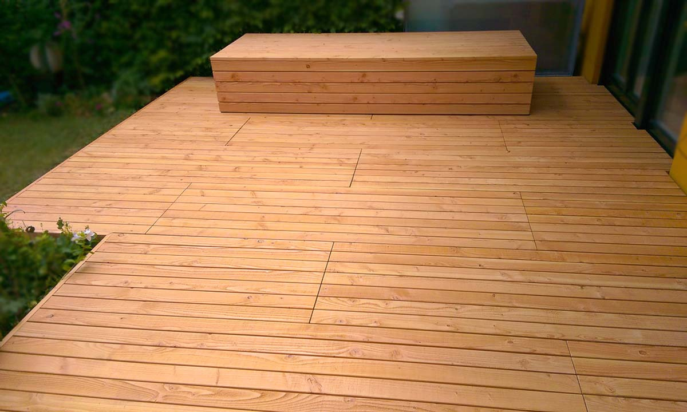
Terrasse aus Douglasie
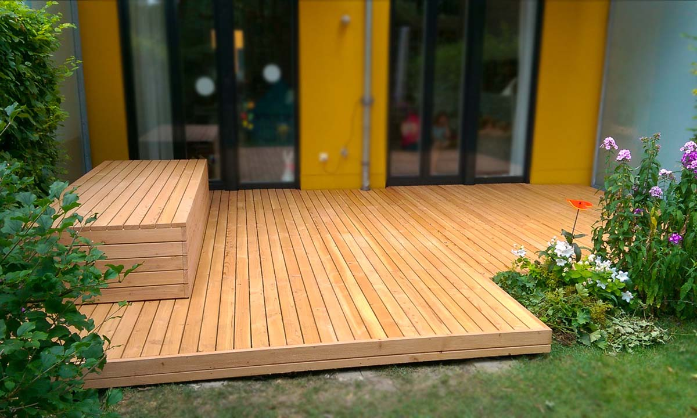
Douglasie – Detail
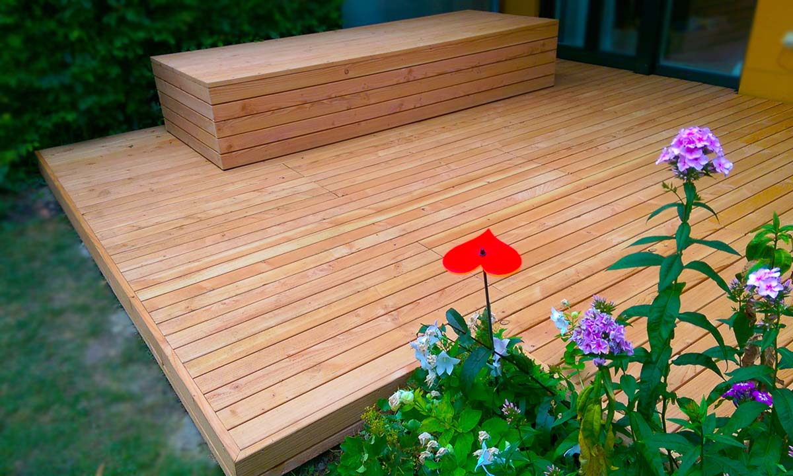
Douglasie – Ansicht
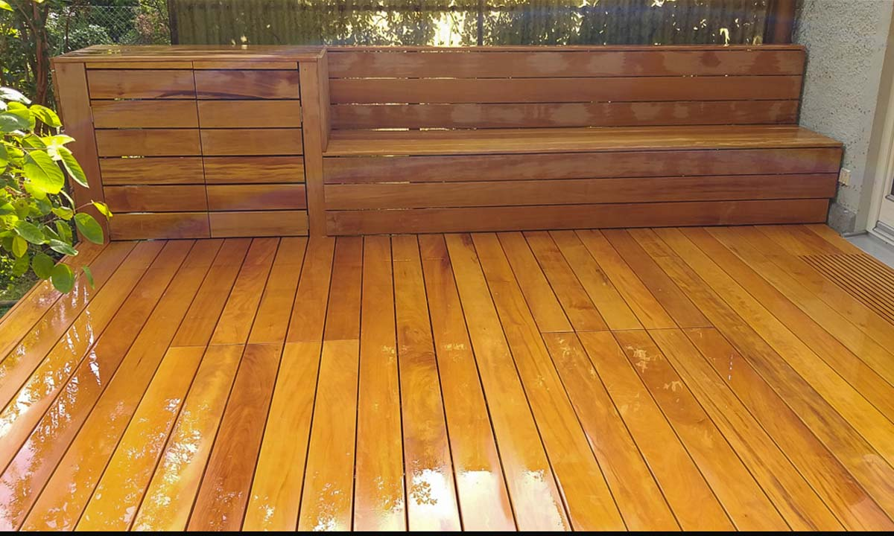
Terrasse aus Garapaholz
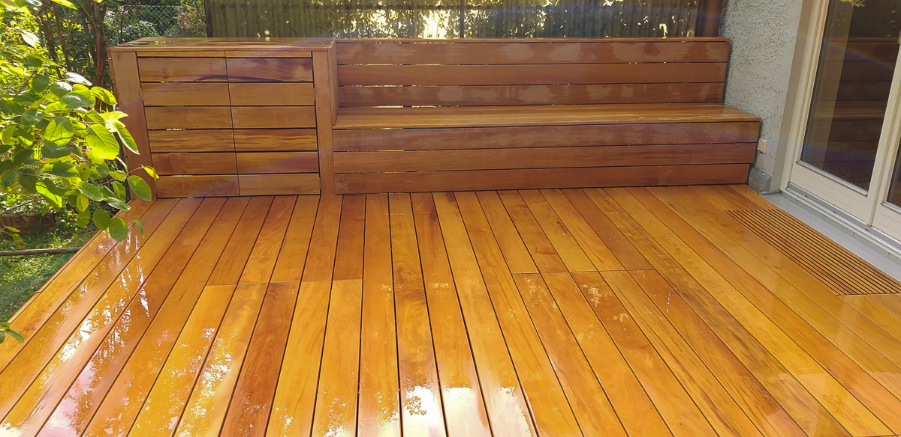
Garapaholz – Perspektive
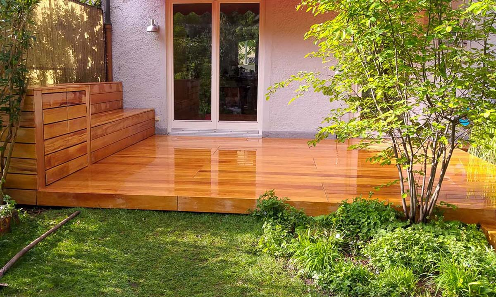
Garapaholz – Nahaufnahme
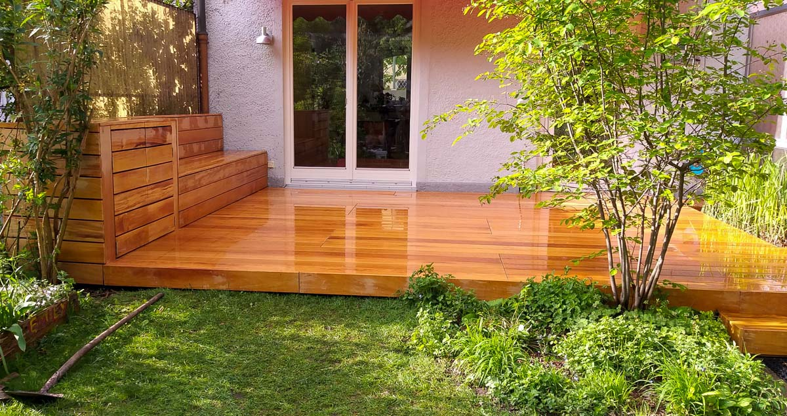
Garapaholz – Verlegung

Garapaholz – Projekt

Garapaholz – Fertigung

Garapaholz – Gesamtansicht

Garapaholz – Ergebnis

Garapaholz – Fertig
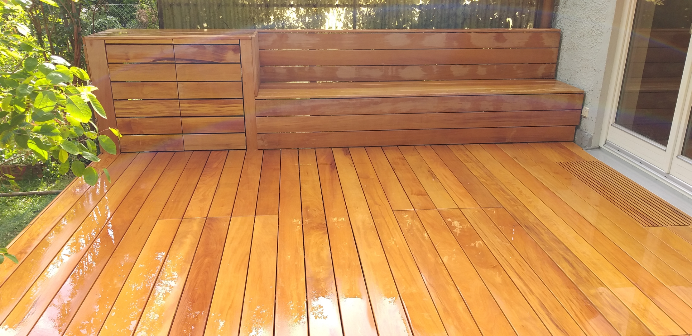
Garapaholz – Abschluss
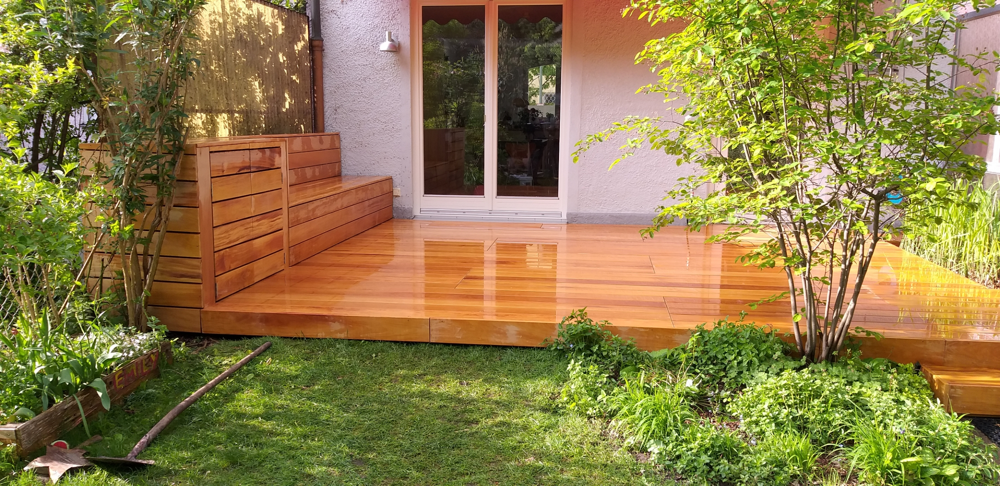
Garapaholz – Finale Ansicht
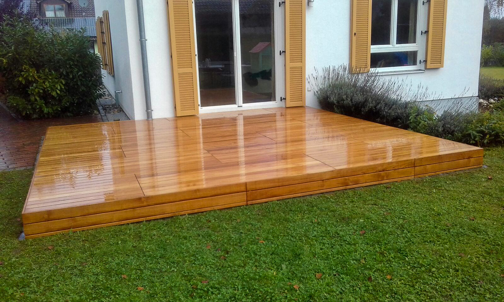
Terrasse aus Teakholz
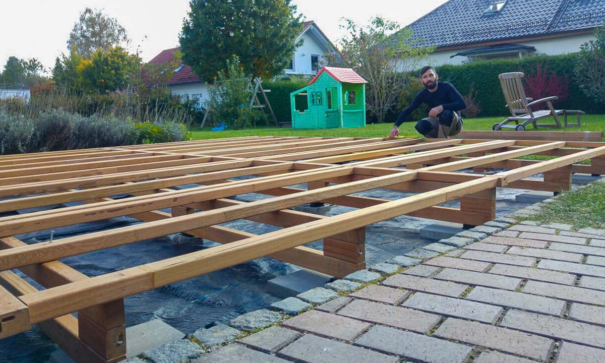
Teakholz – Ansicht
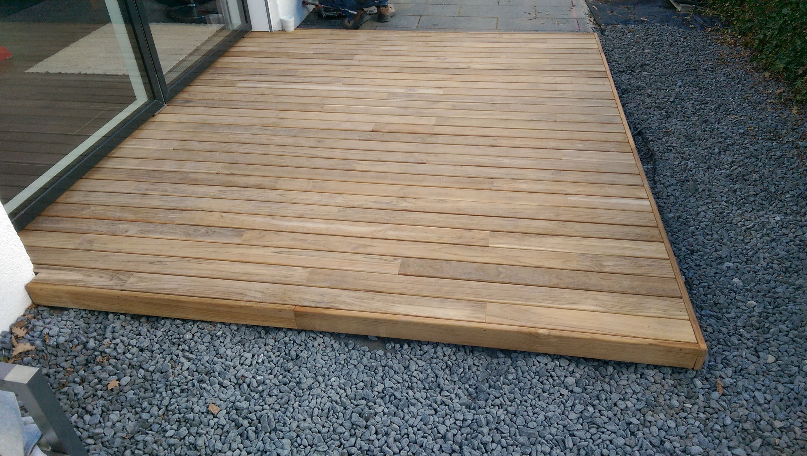
Teakholz – Detail
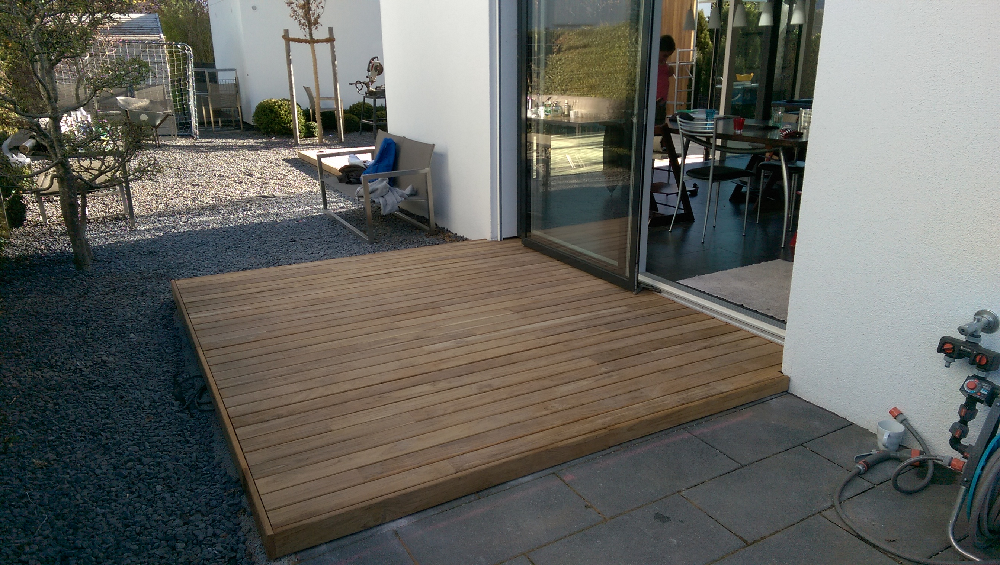
Teakholz – Perspektive
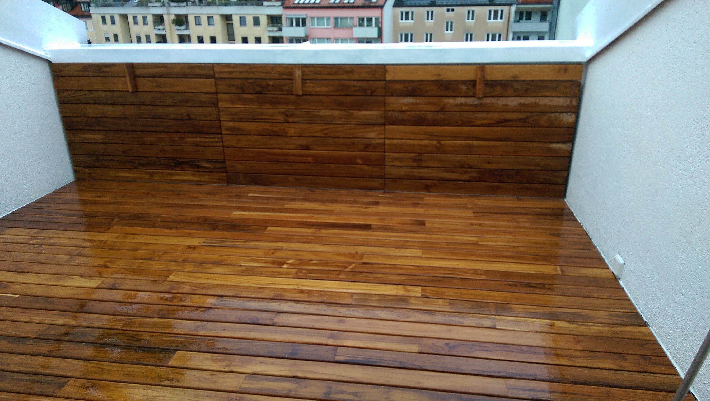
Teakholz – Ergebnis
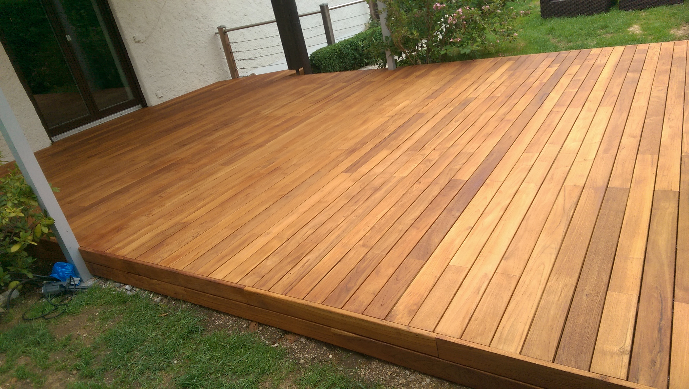
Teakholz – Fertig
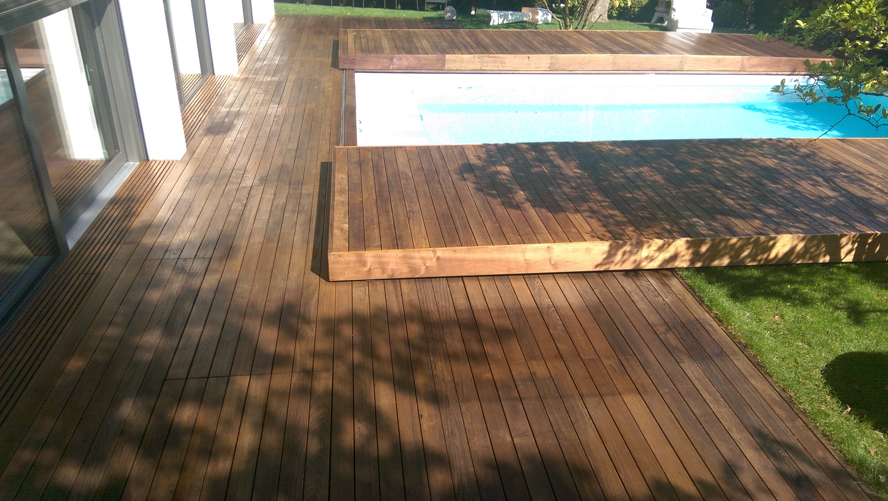
Terrasse aus Thermo-Esche